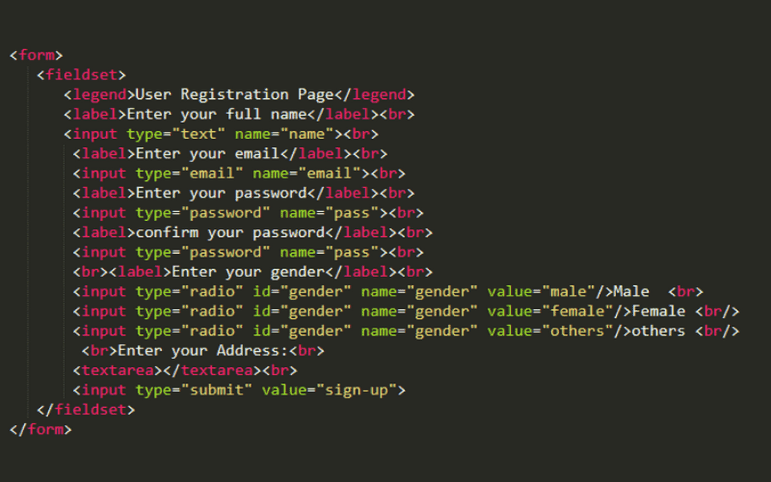
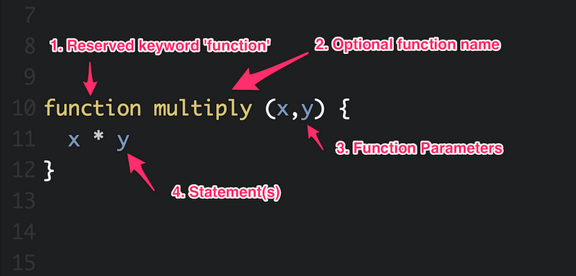

Cùng Nam tìm hiểu jQuery là gì và cách áp dụng công nghệ hiệu quả trong thời gian cực nhanh. Công cụ cung cấp giải pháp thực hiện các tác vụ linh hoạt như thao tác DOM, xử lý sự kiện, tạo hiệu ứng, gửi các yêu cầu AJAX và nhiều tác vụ khác vô cùng hiệu quả.
1. Giới thiệu khái quát về jQuery
jQuery là thư viện JavaScript phổ biến được sử dụng để tương tác với sự thay đổi về nội dung của trang web. Chương trình cung cấp cơ sở cú pháp ngắn gọn và dễ sử dụng để thao tác cùng HTML, xử lý sự kiện, thay đổi kiểu dáng của trang hoặc giao tiếp với máy chủ thông qua AJAX.
Ứng dụng jQuery là cách làm giảm được sự phức tạp trong quá trình viết mã JavaScript. Chương trình sẽ cung cấp các phương thức và tiện ích để thực hiện công việc phổ biến một cách dễ dàng hơn. Điều này sẽ giúp người dùng tăng tốc quá trình phát triển và cải thiện tính tương tác của trang web.
Các module phổ biến của jQuery bao gồm:
- Ajax – Xử lý Ajax
- Atributes – Xử lý các thuộc tính của đối tượng HTML
- Effect – xử lý hiệu ứng
- HTML – Xử lý HTML
- DOM – xử lý Data Object Model
- Event – xử lý sự kiện
- Form – xử lý sự kiện liên quan tới form
- Selector – xử lý luồng lách giữa các đối tượng HTML
Với thư viện này thì cách thao tác với các phần tử trên trang web, thay đổi nội dung động và tương tác với máy chủ trở sẽ nên đơn giản hơn. Nhất là khi người dùng cần phát triển các ứng dụng web và trang web tương tác.
2. Tổng hợp tính năng quan trọng của jQuery
jQuery cung cấp các tính năng mạnh mẽ để hỗ trợ hệ thống thực hiện tác vụ phức tạp trong việc tương tác với trang web và ứng dụng web. Dưới đây là một số tính năng quan trọng của jQuery:
- DOM Traversal và Manipulation: jQuery cho phép bạn dễ dàng tìm kiếm, chọn và thay đổi các phần tử trong cấu trúc DOM của trang web. Tiện ích có ý nghĩa lớn trong việc hỗ trợ người dùng thay đổi nội dung, cấu trúc của trang một cách linh hoạt và dễ dàng.
- Sự kiện: jQuery cung cấp các phương thức để gắn kết và xử lý sự kiện như nhấn chuột, nhấn phím hoặc thay đổi kích thước của cửa sổ trình duyệt.
- AJAX: jQuery tích hợp API với cách sử dụng dễ dàng nhằm thực hiện các yêu cầu AJAX. Chương trình cho phép trang web tải và gửi dữ liệu một cách không đồng bộ mà không cần phải làm mới toàn bộ trang.
- Hiệu ứng và Animation: jQuery cung cấp các phương thức để thực hiện hiệu ứng và animation trên các phần tử HTML, từ đó tạo ra trải nghiệm người dùng tốt hơn.
- Hỗ trợ đa trình duyệt: jQuery giúp ổn định và đồng đều hơn trong việc xử lý các sự khác biệt giữa các trình duyệt web khác nhau, giúp đảm bảo tính tương thích và nhất quán trên mọi nền tảng.
- Plugins và Extensions: Cộng đồng phát triển rộng lớn của jQuery đã xây dựng hàng ngàn plugin và tiện ích mở rộng nhằm phát triển các tính năng của thư viện.
3. Ưu nhược điểm của jQuery
jQuery có nhiều ưu điểm nhưng cũng có một số nhược điểm nhất định. Dưới đây là một số điểm mạnh và yếu của jQuery:
Ưu điểm:
- Dễ học và sử dụng: jQuery cung cấp cú pháp dễ hiểu và ngắn gọn nhằm làm giảm đáng kể sự phức tạp trong quá trình viết mã JavaScript. Điều này làm cho nó trở thành một công cụ lý tưởng cho cả người mới học lập trình và những người có kinh nghiệm
- Tính tương thích: jQuery được thiết kế để hoạt động mượt mà trên tất cả các trình duyệt web phổ biến, giảm thiểu sự khác biệt trong cách mà các trình duyệt xử lý mã JavaScript và DOM.
- AJAX support: jQuery cung cấp API dễ sử dụng để thực hiện các yêu cầu AJAX, làm cho việc tải và gửi dữ liệu một cách không đồng bộ trở nên đơn giản và hiệu quả.
- Plugins và cộng đồng phát triển: jQuery có một cộng đồng phát triển rộng lớn với hàng ngàn plugin và extension cho phép mở rộng tính năng của thư viện.
- Hiệu suất: jQuery được tối ưu hóa để đảm bảo hiệu suất tốt, giúp tăng tốc quá trình tải trang và tương tác người dùng.
Một số nhược điểm:
- Kích thước: jQuery có kích thước tương đối lớn so với một thư viện JavaScript cơ bản. Điều này có thể làm tăng thời gian tải trang và kích thước cũng là một yếu tố quan trọng đối với các ứng dụng web di động hoặc trang web yêu cầu khả năng tải lần đầu nhanh chóng.
- Tính linh hoạt: Khi một trang web hoặc ứng dụng có yêu cầu đặc biệt, việc sử dụng jQuery sẽ khiến việc tối ưu hóa và tinh chỉnh trở nên khó khăn hơn so với việc sử dụng mã JavaScript thuần túy.
- Dễ trở nên phụ thuộc: Việc sử dụng jQuery thường khiến cho người phát triển dễ trở nên phụ thuộc vào thư viện, từ đó mà họ thường làm mất đi khả năng làm việc với JavaScript thuần túy.
4. Bật mí các thuật ngữ cần biết của jQuery
jQuery Selectors
jQuery Selectors là các biểu thức cho phép bạn chọn và tìm kiếm các phần tử HTML trong một trang web, tạo ra khả năng tương tác và thay đổi nội dung của các phần tử này. Các Selectors này cung cấp phương pháp xác định các phần tử cần tác động trong cấu trúc DOM của trang web.
Ví dụ, sau đây là một số loại jQuery Selectors thông dụng:
- Selector theo tên thẻ: $("p") chọn tất cả các phần tử trên trang.
- Selector theo ID: $("#myElement") chọn phần tử có ID là "myElement".
- Selector theo lớp: $(".myClass") chọn tất cả các phần tử có lớp là "myClass".
- Selector theo thuộc tính: $("[name='email']") chọn các phần tử có thuộc tính name là "email".
- Selector theo quan hệ: $("ul li") chọn tất cả các phần tử trong các phần tử .
Bằng cách sử dụng các Selectors này, bạn có thể dễ dàng chọn và thao tác với các phần tử HTML trong trang web bằng jQuery.
jQuery Tag Name
Tag Name thường được sử dụng để trích xuất tên thẻ HTML của các phần tử trên trang web. Người dùng có thể thực hiện bằng cách sử dụng phương thức prop() hoặc attr() của jQuery để truy cập và trích xuất tên thẻ của một phần tử cụ thể trong DOM (Document Object Model).
Function trong jQuery
Function được sử dụng để thực hiện các hành động trên các phần tử được chọn. jQuery cung cấp các hàm có sẵn để thực hiện các thao tác như thêm/xóa lớp, thay đổi nội dung, xử lý sự kiện và nhiều hành động DOM khác. Function trong jQuery thường được gọi là các phương thức của đối tượng jQuery, cho phép thao tác linh hoạt với các phần tử HTML.
5. Tạm kết
Mong rằng bạn đọc đã hiểu jQuery là gì sau khi theo dõi nội dung trong bài viết trên. Công nghệ thường được sử dụng rộng rãi trong cộng đồng phát triển web vì tính tiện lợi và khả năng tương thích với nhiều trình duyệt khác nhau.